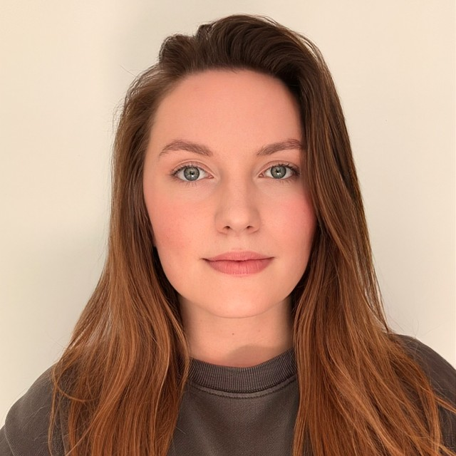

Scholars overwhelmingly study the consequences of political content, yet this material makes up only 3% of what people encounter online. The remaining 97% is everyday content such as entertainment, blogs, lifestyle sites and social media influencers. HIDDENPOL argues that this widely consumed content can have important political consequences for citizens' values, beliefs, and orientations. If this is the case, then both research and policy are missing the very content that may be driving today's democratic challenges, such as rising misperceptions, polarization, and declining trust.
I argue that media effects depend not only on content's political properties, but on how these are perceived and processed. Explicitly political content often triggers defense mechanisms (skepticism, counterarguing, reinforcement), limiting its impact. Everyday content, in contrast, embeds 'hidden' political cues (e.g., a cooking show featuring only women). When unrecognized, these cues may bypass defenses and quietly shape orientations. HIDDENPOL theorizes that such under-recognition explains why the overlooked 97% may be politically consequential and introduces politicalness as the concept that explains when everyday content becomes politically meaningful.
HIDDENPOL pursues four goals: it develops a new framework for understanding how media shape values and beliefs (WP1); classifies online content from Instagram, TikTok, YouTube, and websites in the Netherlands, Spain, and the United States (WP2); examines how audiences perceive this content and how perceptions evolve (WP3); and tests causal effects with survey- (WP4a) and field-experiments (WP4b).
The results will reorient media-effects theory and reveal whether current responses to democratic challenges — fact-checking, media literacy, regulation — are too narrowly targeted, leaving potentially powerful but overlooked drivers of change in citizens' values and beliefs unchecked.
A new framework for how media shape values and beliefs.
Classifying online content across platforms and countries.
How audiences perceive this content, and how perceptions evolve.
Testing causal effects with survey and field experiments.

Political scientist and experimentalist at the University of Zurich, studying how digital technologies shape the information ecosystem.
A postdoctoral researcher and research assistants will join the team from 2027. See open positions below.
HIDDENPOL is building its team for the project start in January 2027. Calls for the positions below will open soon. If you're interested, feel free to reach out ahead of time.
Part-time positions supporting the project's data collection and content-classification work across the Netherlands, Spain, and the United States. A good fit for students interested in political communication, computational methods, and experimental research. Speaking Dutch and/or Spanish is a plus.
A four-year position (80%) on HIDDENPOL, hired through an open call, for a researcher with a background in Computational Social Science. The role offers substantial autonomy to develop an independent research profile while contributing to the project's cross-country experimental and computational work.